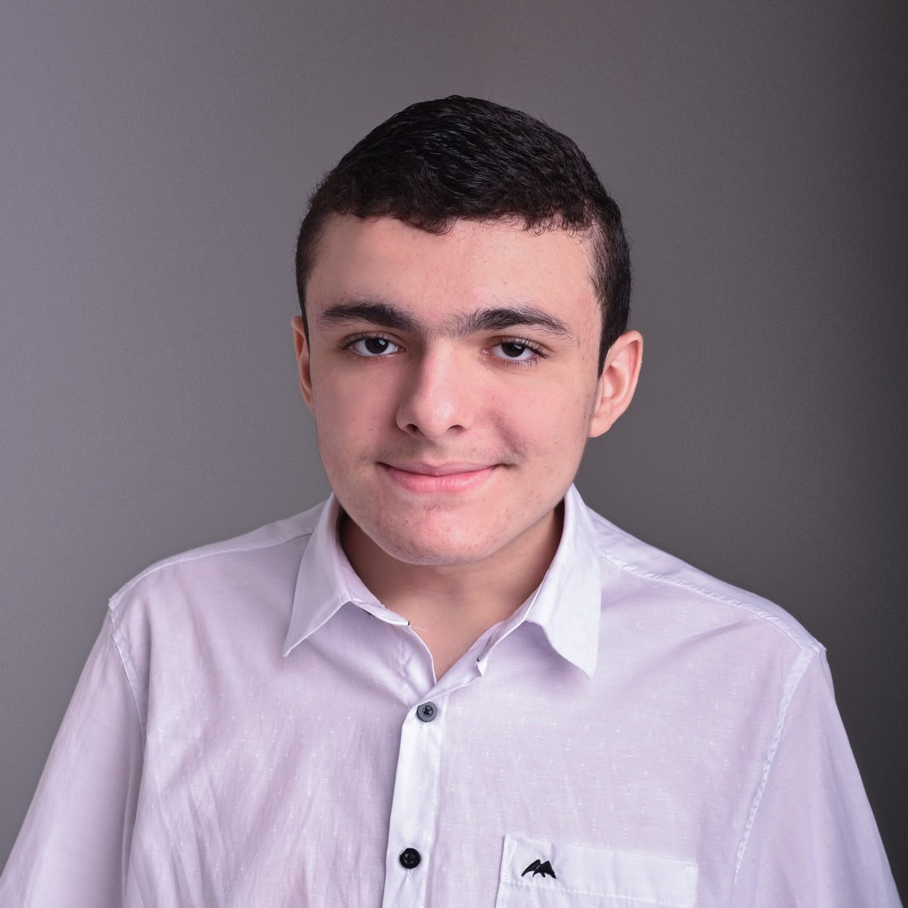

// sobre mim
Minha Trajetória
Um pouco sobre quem sou, de onde vim e para onde quero ir no mundo da tecnologia.

Quem sou eu?
Olá! Meu nome é Iago Fonseca Régis, tenho 15 anos e atualmente estou cursando o 1º ano do ensino técnico em Informática na EEEP Jeová Costa Lima. Meu fascínio pelo universo da tecnologia não surgiu por acaso; ele começou a ser construído no meu dia a dia através do contato constante com jogos e plataformas digitais. Essa paixão inicial pelos games me instigou a querer entender o que existia por trás das telas, levando-me a escolher o curso técnico para transformar essa curiosidade em conhecimento prático e estruturado.
Como começou meu interesse por tecnologia?
Antes de ingressar no curso, minhas experiências com a área aconteciam de forma autodidata, pesquisando por conta própria como funcionavam os diversos aparelhos eletrônicos do meu cotidiano, como celular, tablet, notebook e televisão. Hoje, no ambiente escolar, tenho a oportunidade de aprofundar esses estudos de maneira formal. Atualmente, estou aprendendo sobre a manutenção de hardwares, o que tem atendido diretamente às áreas que mais despertam meu interesse: o funcionamento detalhado dos circuitos internos das máquinas e a lógica presente nos códigos de programação.
O que estou aprendendo e onde quero chegar?
Olhando para o futuro, meu grande objetivo profissional é tornar um produtor de jogos, uma meta inspirada pela minha forte ligação com os games e, especialmente, pelo meu jogo favorito, o Brawl Stars. Para alcançar esse sonho, pretendo cursar Engenharia de Software e construir uma carreira sólida que me proporcione estabilidade financeira, unindo o trabalho com aquilo que realmente amo fazer.